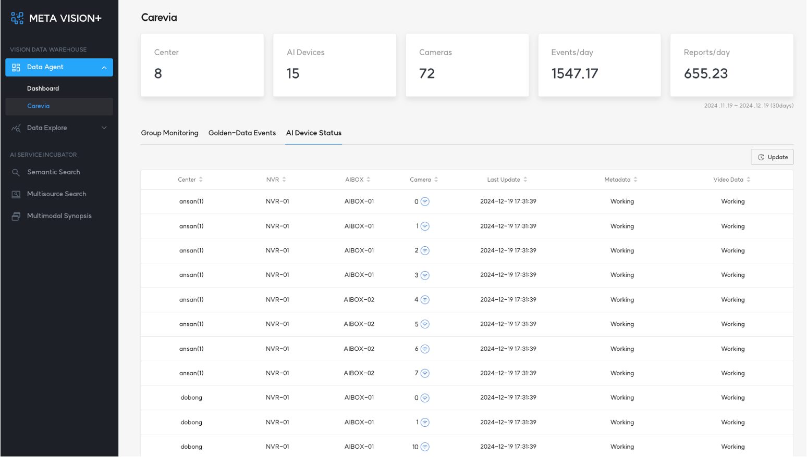
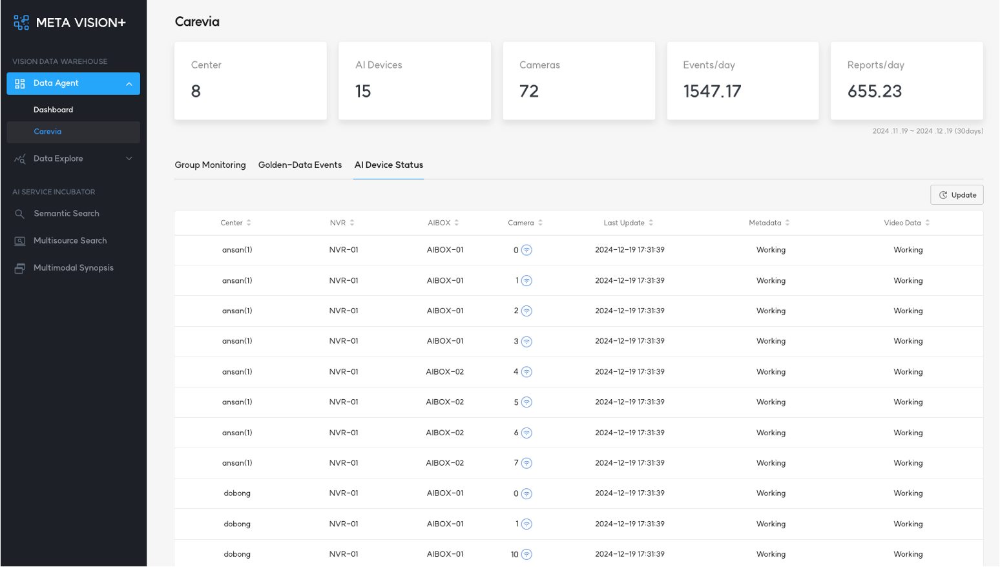

1. AI Device Status¶
AI Device Status는 Data Agent에서 원격으로 모니터링하는 장비의 상태를 체크하고, 현황을 보여줍니다.
상태 모니터링을 하고 있는 장비는 다음과 같습니다.
- 돌봄센터 서버
- NVR(Network Video Recorder)
- AI Box(Device)
- Camera

AI Device Status는 Data Agent에서 원격으로 모니터링하는 장비의 상태를 체크하고, 현황을 보여줍니다.
상태 모니터링을 하고 있는 장비는 다음과 같습니다.
